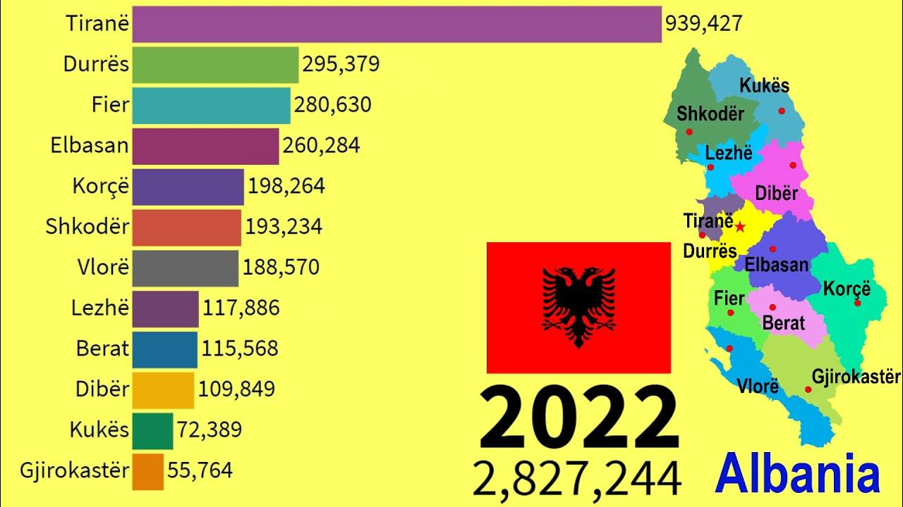

La population albanaise
L'Albanie est un pays situé dans les Balkans, au sud-est de l'Europe. Ses habitants sont appelés les Albanais et parlent principalement l'albanais.

La culture et les traditions
Les Albanais sont connus pour leur hospitalité, leurs traditions et leur patrimoine culturel. La famille occupe une place importante dans la société albanaise.